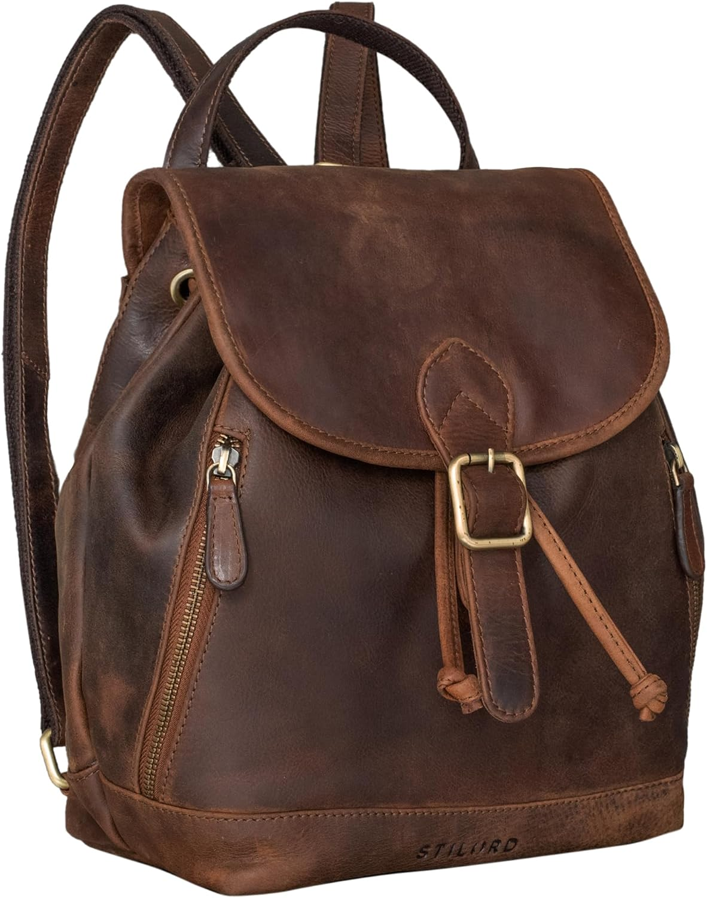

STILORD 'Allison' Mochila Mujer Casual de Cuero…: el bolso del día 221
Fin de semana: otras reglas, otros ritmos. El bolso de hoy es el STILORD 'Allison' Mochila Mujer Casual de Cuero Pequeña Daypack Backpack Vintage Bandolera Bolso de Mano Mochila de Día para Trabajo Salir de Auténtica Piel. No es un capricho de escaparate: es el que acompaña el bolso que no pide permiso, con 4,3★ de nota media y 159 valoraciones que respaldan la decisión.

Un bolso no cambia tu día. Cambia la manera de entrar en él: con lo que necesitas, sin lo que sobra y con la certeza de que otras 159 personas ya hicieron la misma elección antes que tú. Lo que más repiten sus compradoras: calidad.